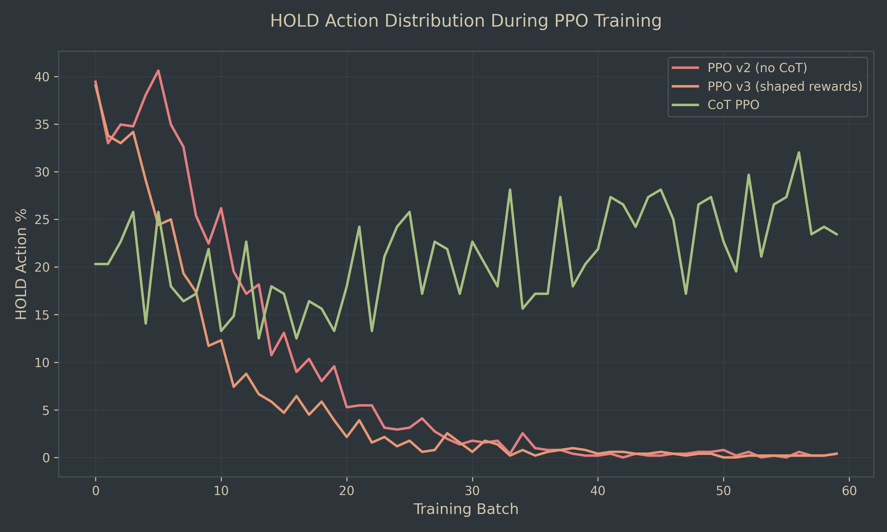
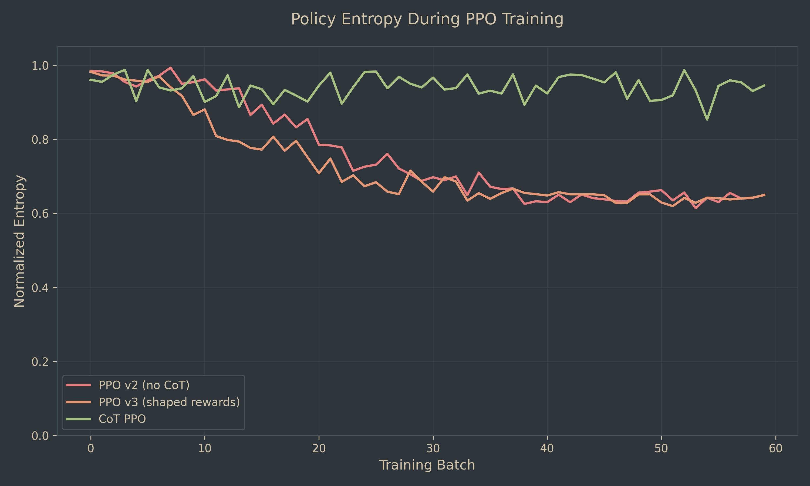
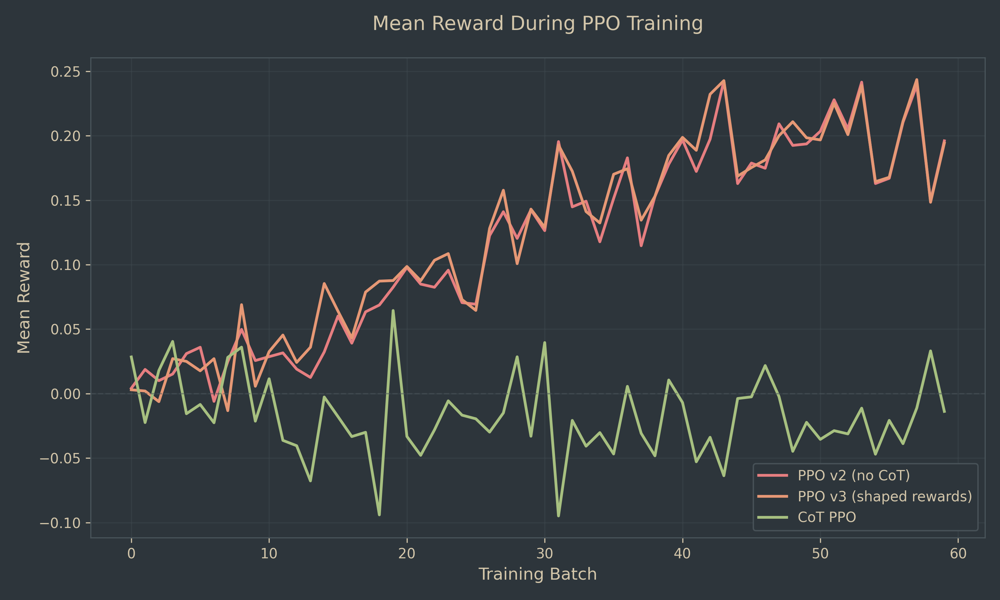
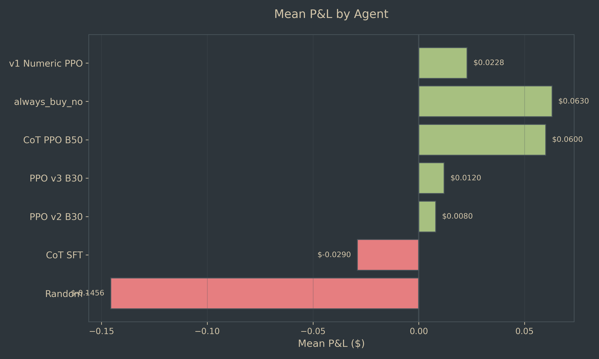

Chain-of-Thought Reasoning Solves Action Collapse in Low-Cardinality RL
We trained language models to trade binary prediction markets using reinforcement learning. Initial attempts with standard PPO led to severe action collapse: agents converged to never holding positions (0% HOLD rate by batch 30), producing degenerate policies despite reasonable profit. Adding chain-of-thought (CoT) reasoning before action selection completely solved this collapse: CoT agents maintained 15-30% HOLD rates and ~0.95 policy entropy throughout training while achieving comparable performance (+$0.060 vs +$0.063 for always-buy-no baseline). This suggests that in low-cardinality action spaces where multiple actions can yield similar rewards, explicit reasoning steps prevent premature convergence by maintaining exploration of the strategic landscape.
Teaching language models to make financial decisions is challenging. The action space is discrete and low-cardinality (BUY_YES, BUY_NO, HOLD), rewards are noisy and delayed, and multiple strategies can yield similar outcomes. Standard reinforcement learning easily falls into the trap of action collapse—converging to a single action regardless of context.
We approached this problem through prediction markets: binary yes/no questions with evolving probabilities and trading opportunities. Our agent observes market state (current probability, question text, resolution criteria) and chooses whether to buy yes, buy no, or hold. The reward is realized profit when the market resolves.
Key findings:
We used binary prediction markets from Manifold Markets, filtering for:
Final dataset: 400 markets for training, 40 for evaluation. Each market provides question text, description, resolution criteria, and a time series of probability updates representing trading opportunities.
Example market:
We initially tried Group Relative Policy Optimization (GRPO), sampling multiple actions per state and using relative ranking for rewards. This failed catastrophically:
GRPO works well for response ranking in chat models but breaks down when reward variance is high and actions have delayed, stochastic outcomes.
PPO v2: Standard PPO with terminal profit reward only. Achieved +$0.008 mean P&L but collapsed to 0% HOLD by batch 30.
PPO v3: Added shaped intermediate rewards:
Result: Identical collapse. PPO v3 reached +$0.012 (slightly better) but still fell to 0% HOLD and 0.60 entropy.
We modified the architecture to require explicit reasoning:
The model must generate reasoning tokens before selecting an action. This simple change completely prevented collapse:




| Agent | Mean P&L | Win Rate | HOLD % | Entropy |
|---|---|---|---|---|
| v1 Numeric PPO | +$0.0228 (+2.28%) | 90% | N/A | N/A |
| always_buy_no | +$0.063 | 60% | N/A | N/A |
| CoT PPO B50 | +$0.060 | 32.5% | 5.0% | ~0.95 |
| PPO v3 B30 | +$0.012 | 72.5% | 0% | ~0.60 |
| PPO v2 B30 | +$0.008 | N/A | 0% | ~0.60 |
| CoT SFT | -$0.029 | 27.5% | 5.0% | N/A |
| Random | -$0.1456 | N/A | N/A | N/A |
Key observations:
Why does HOLD disappear in non-CoT agents?
In prediction markets, HOLD is often the correct action:
But HOLD provides no immediate feedback—you only learn whether holding was correct when the market resolves, hundreds of timesteps later. The RL signal for HOLD is sparse and delayed.
In contrast, BUY_YES and BUY_NO provide immediate state changes (you now have a position). Even if these actions are suboptimal, they produce clearer gradients. The agent learns "buying does something" faster than it learns "holding is often optimal."
With a 3-action space and noisy rewards, standard PPO gravitates toward actions with stronger gradients, even if those actions aren't globally optimal. By batch 30, the agent has effectively reduced to a 2-action policy.
Chain-of-thought reasoning introduces several mechanisms that prevent collapse:
The reasoning tokens create an intermediate latent space where the model explores why to take an action before committing to it. This slows down convergence and forces consideration of multiple paths.
With CoT, the model learns "reasoning patterns that lead to good actions" rather than just "good actions." This compositional structure provides more learning signal from sparse rewards.
Generating 50-100 reasoning tokens adds stochasticity to the forward pass. Even with the same state input, different reasoning paths can lead to different actions. This acts as a form of entropy regularization.
The model was pretrained on human text that includes deliberation before decisions. CoT likely activates this prior, making "think then act" a more natural behavior than "act immediately."
We ran these experiments on two model bases:
The v1 Numeric PPO agent (+2.28%, 90% win rate) was trained on Prime with only numeric features (current price, historical prices, position value). No text, no reasoning, just numbers.
This creates an interesting comparison:
| Agent | Model | Input | Mean P&L | Win Rate |
|---|---|---|---|---|
| v1 Numeric PPO | Prime (7B) | Numbers only | +2.28% | 90% |
| CoT PPO | Tinker (0.5B) | Text + CoT | +$0.060 | 32.5% |
| PPO v2/v3 | Tinker (0.5B) | Text, no CoT | +$0.008–0.012 | 72.5% |
Why does numeric-only Prime outperform text-based Tinker?
The fact that CoT on Tinker achieves 60% of Prime's performance with 1/14th the parameters suggests that reasoning helps bridge the capability gap, but doesn't fully close it.
In low-cardinality action spaces with sparse, delayed rewards, standard RL can collapse to degenerate policies even when achieving positive returns. Chain-of-thought reasoning prevents this collapse by introducing compositional structure and implicit exploration.
The key insight: reasoning tokens act as a form of structured regularization that preserves policy diversity during training. This suggests that for complex decision-making tasks, we may want to explicitly build in deliberation steps rather than hoping end-to-end optimization will learn them.
Future work should explore: